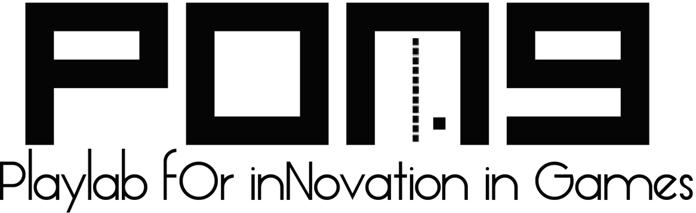
Un giudice percettivo, in tempo reale, della resa emotiva del parlato,
integrato nel loop conversazionale di un Virtual Human
Francesco Rossi
Prof.ssa Laura Anna Ripamonti
Dott.ssa Susanna Brambilla
2025–2026
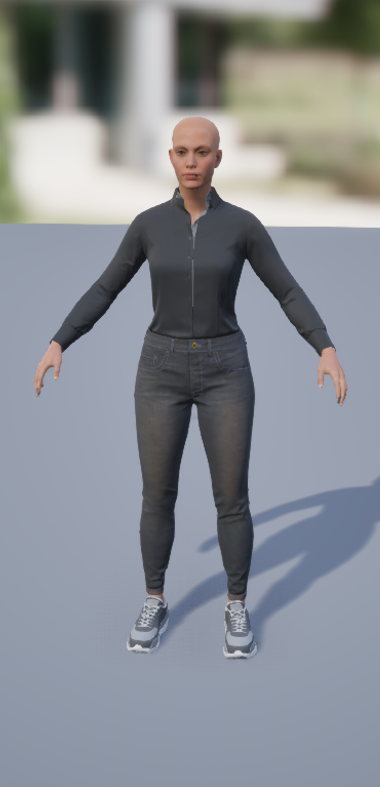
Agente nato nel laboratorio PONG, raffinato da tesisti precedenti.
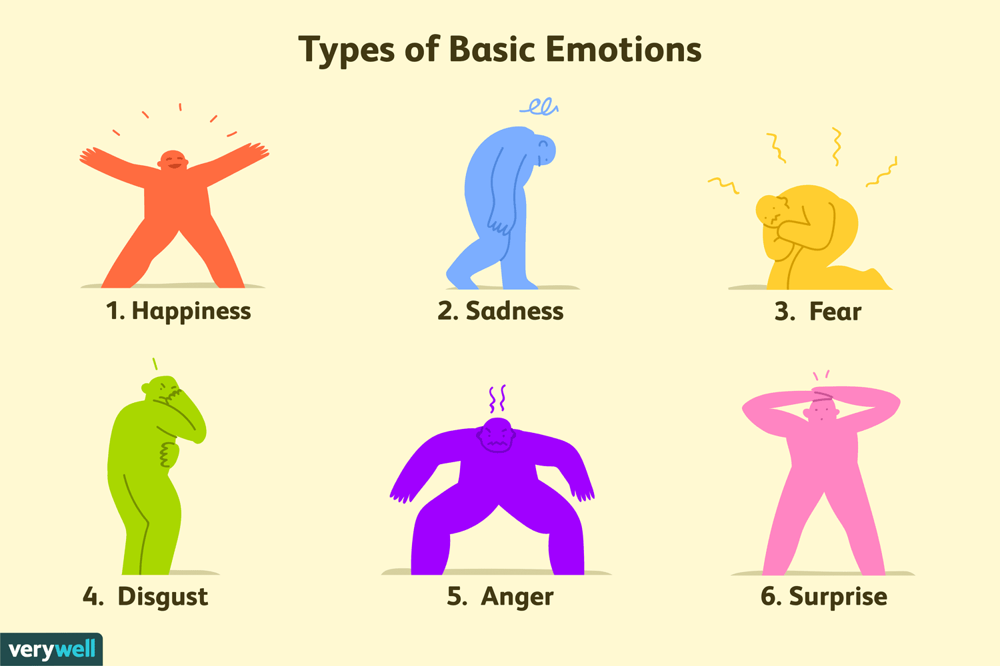
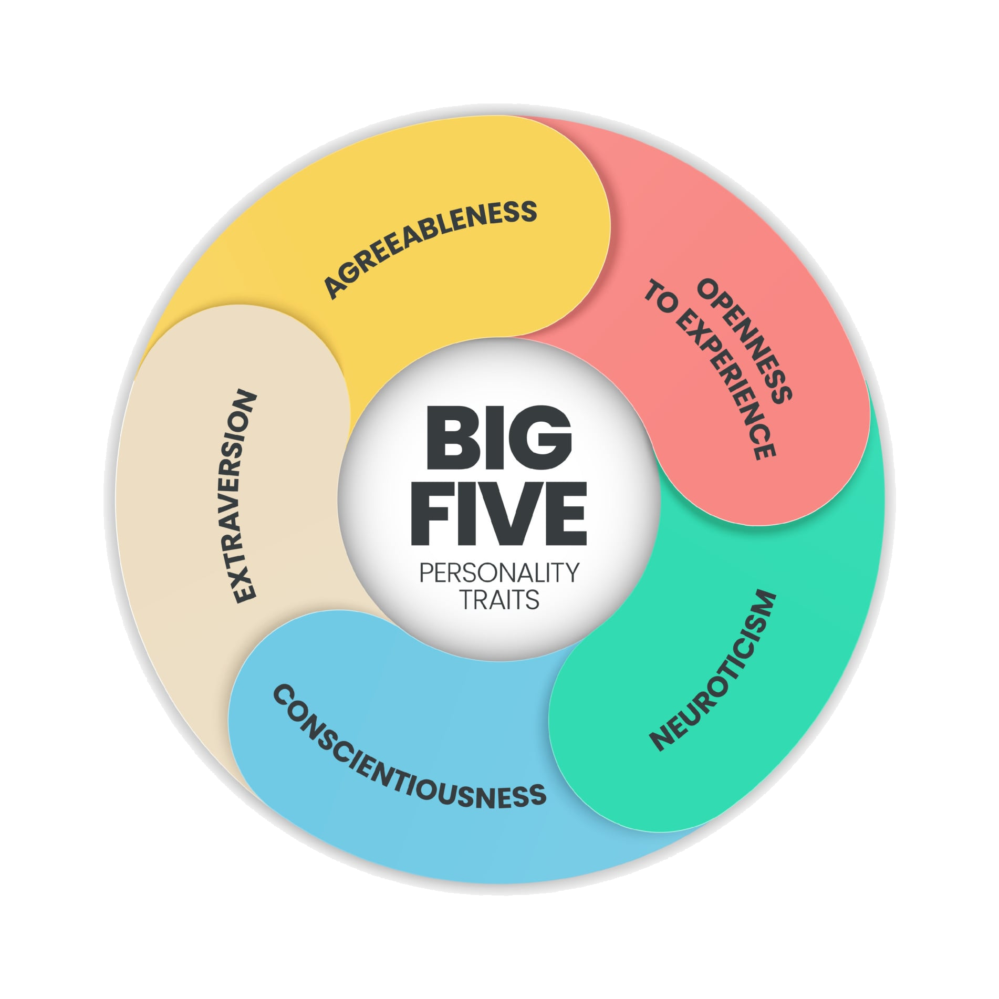
Continuo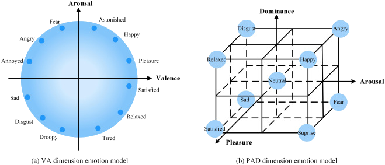
postura e prossemica
espressività facciale
contenuto verbale
battito, sudorazione
prosodia, ritmo e pitch
Dimostrare che un modello SER allineato alla percezione umana può fungere da giudice autoritativo della resa emotiva di un utente, all'interno di un loop conversazionale generativo con un Virtual Human.
Il classificatore soft multi-label approssima la percezione di una giuria umana?
Quale configurazione massimizza l'accuratezza sugli audio unanimi?
Il ciclo di valutazione e ripetizione migliora la resa emotiva in modo misurabile?
Il giudice virtuale inibisce o libera l'espressione dell'emozione richiesta?
A parità di esito, il verdetto del VH è equo e accettabile quanto quello umano?
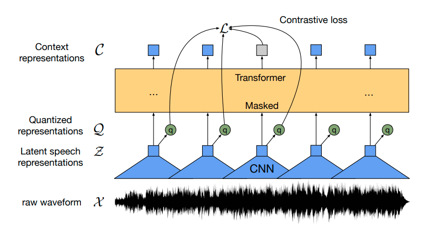
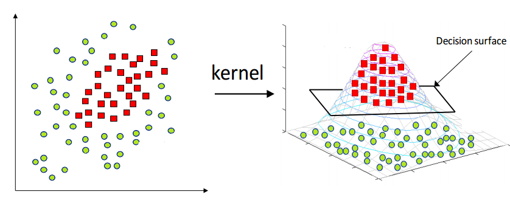
| Test | Regola positivi | α | C | fold | Acc. perc. | Cos | Cons 5/5 |
|---|---|---|---|---|---|---|---|
| Test1 | Dominanza relativa | 0,3 | 1 | 5×3 | 73,3% | 0,813 | 89,5% |
| Test2 | Dominanza relativa | 0,5 | 1 | 5×3 | 73,2% | 0,811 | 89,2% |
| Test3 | Unanimità (5/5) | 0,2 | 10 | 10×5 | 67,8% | 0,762 | 85,6% |
| Test4 | Unanimità (5/5) | 0,3 | 1 | 5×3 | 67,4% | 0,762 | 84,5% |
| Test5 | Rapporto di dominanza | 0,3 | 1 | 5×3 | 73,2% | 0,811 | 89,3% |
| Test6 | Rapporto di dominanza | 0,3 | 1 | 10×5 | 73,8% | 0,815 | 90,3% |
| Test7 ✓ | Rapporto di dominanza | 0,2 | 10 | 10×5 | 75,6% | 0,824 | 91,6% |
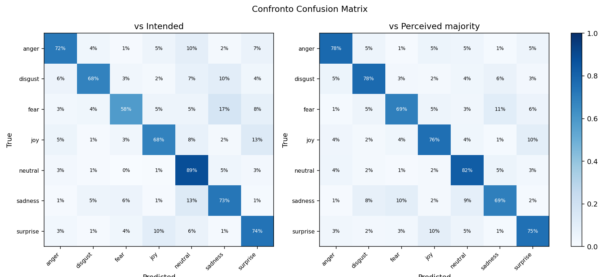
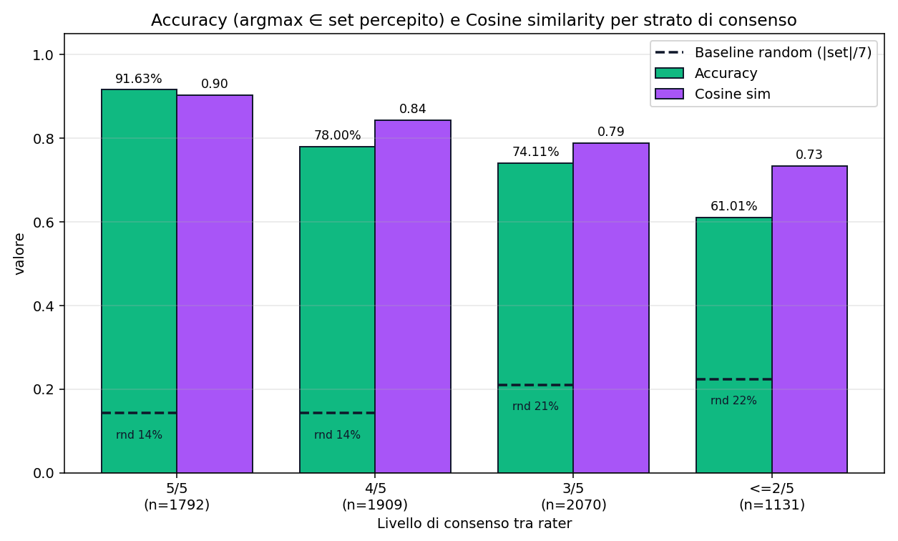
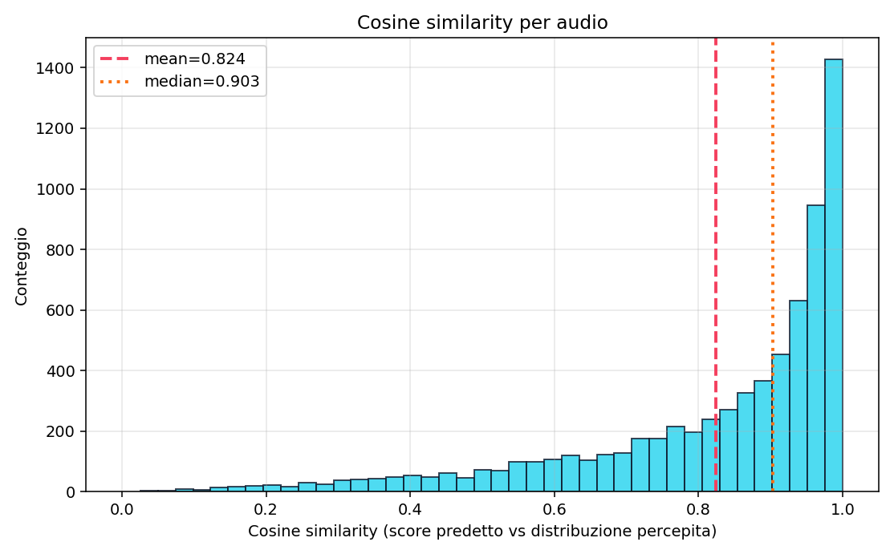
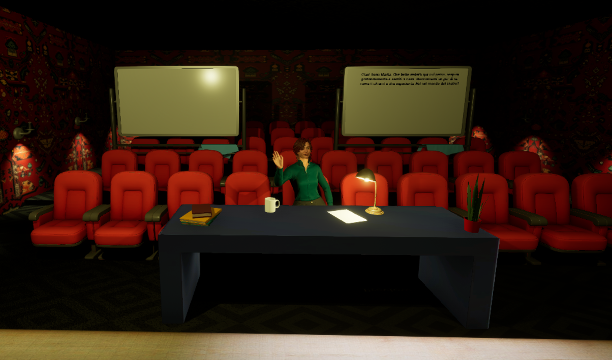
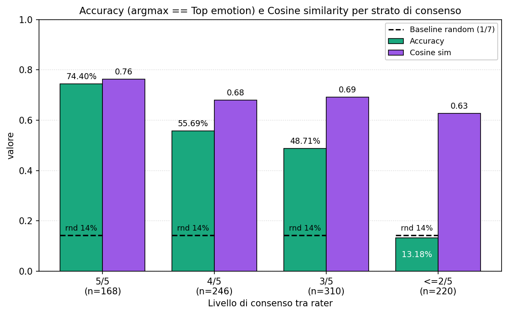
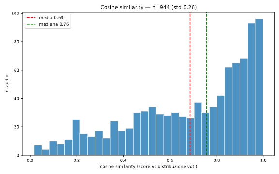
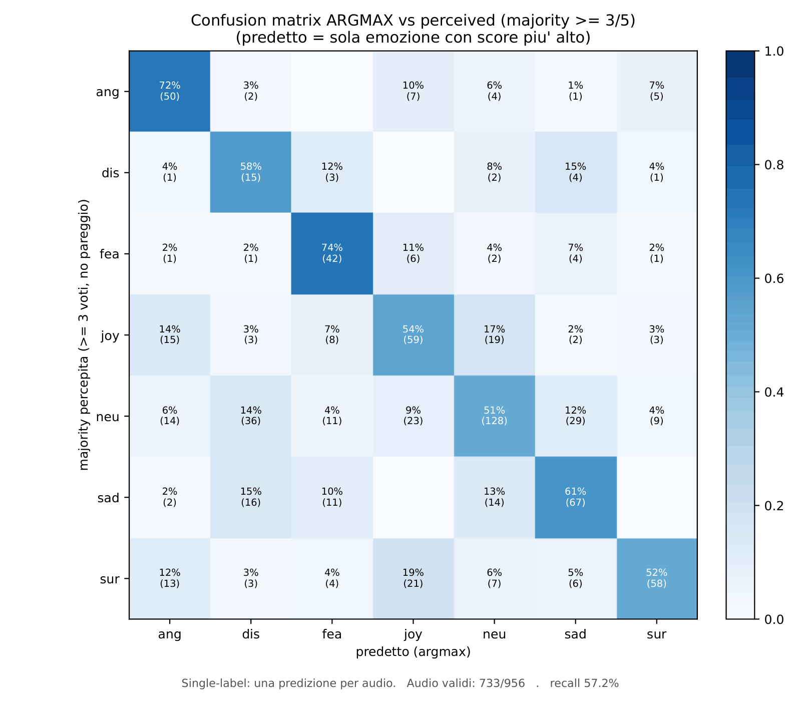
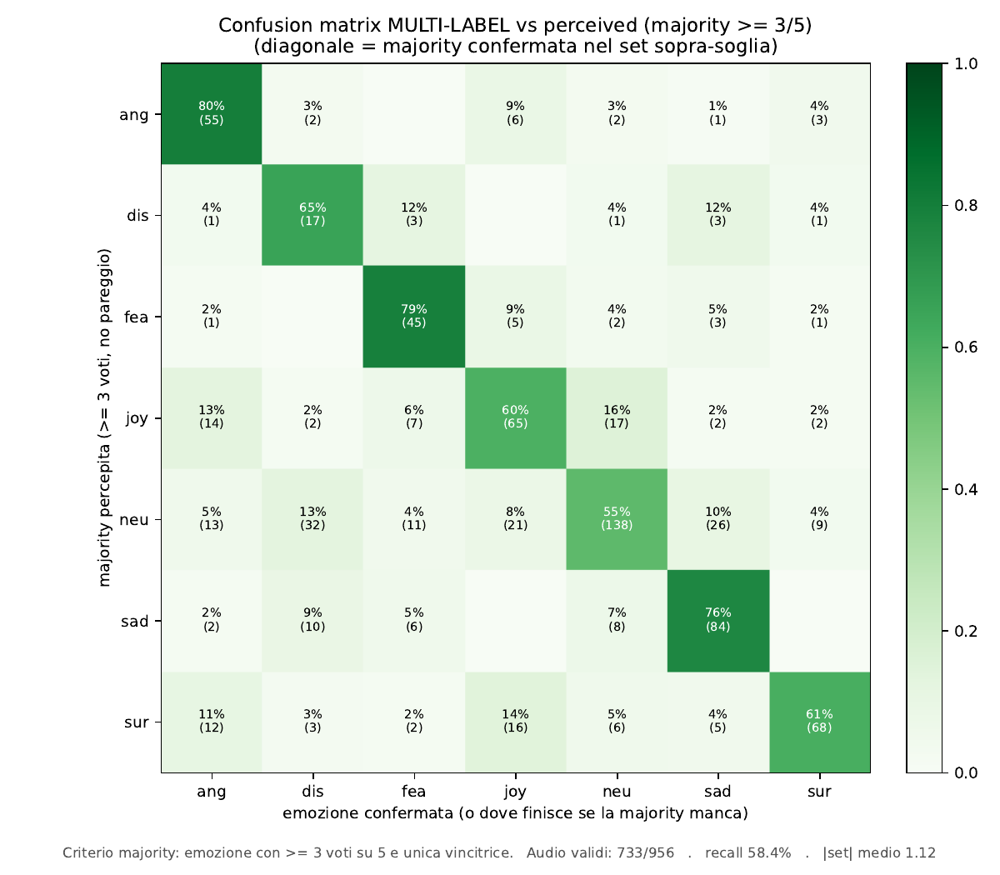
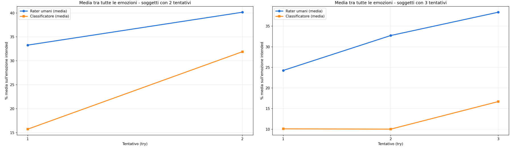
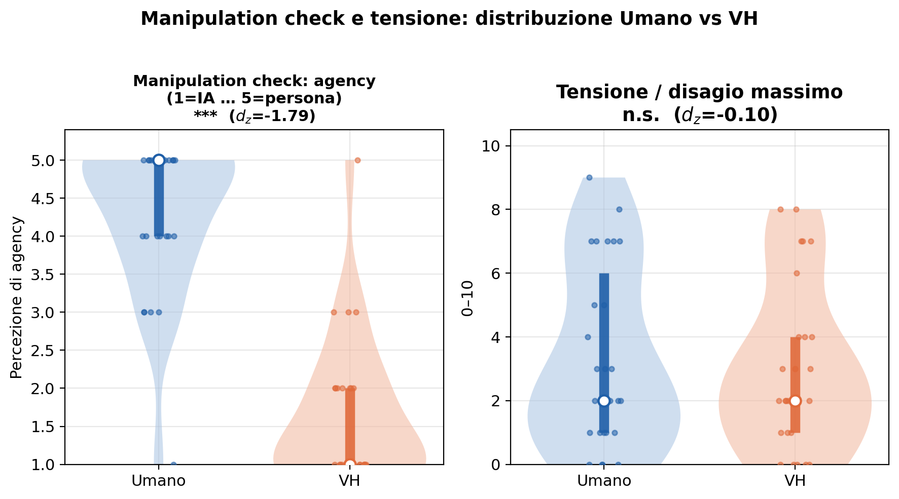
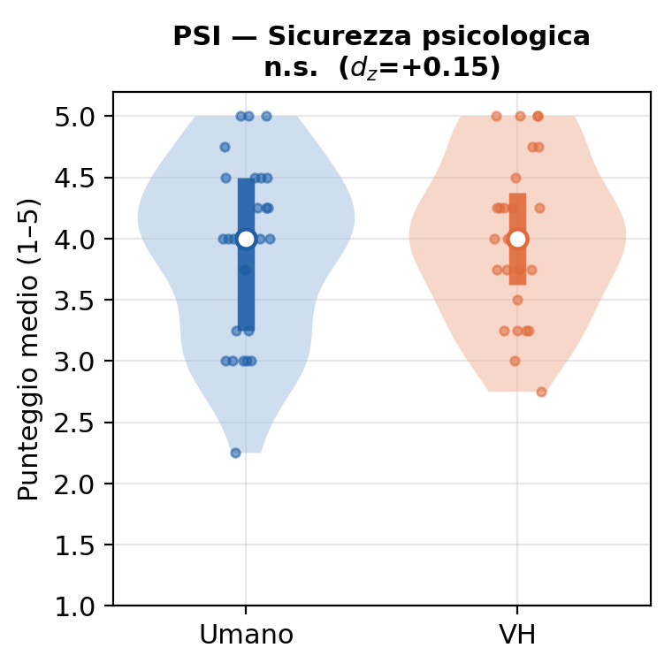
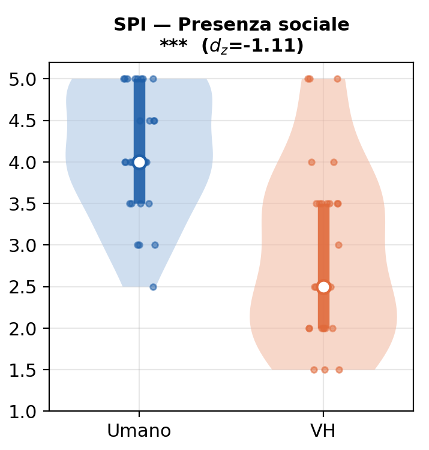
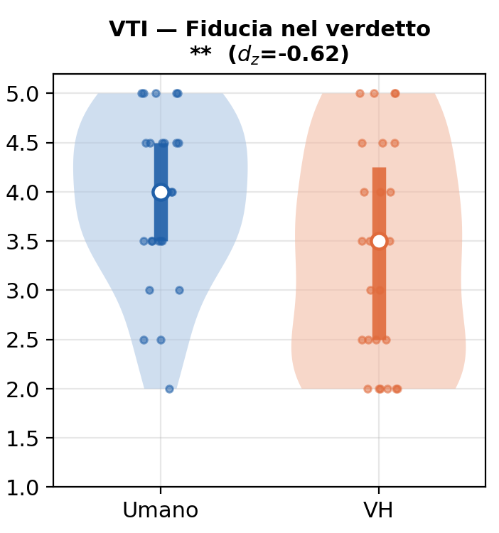
75,6% vs perceived, cosine 0,82; sul campo scende di 17,3 punti confrontata al 48% della giuria umana.
Con α = 0,2 e C = 10: consenso 5/5 al 91,6%. La regola pesa più del tuning.
Rater e classificatore crescono nella stessa direzione: 24% → 40% nel gruppo a 3 tentativi.
Sicurezza psicologica e tensione lievemente milgiori nell'interazione con il Vitual Human
Il verdetto è accettabile; il deficit riguarda la presenza sociale, non l'equità del giudizio.
Utilizzo score per influenzare l'emotività.
Leggere l'intensità espressiva, recuperando arousal.
Finestra mobile per seguire la traiettoria emotiva nel tempo.
«E come possiamo intenderci, signore, se nelle parole ch'io dico metto il senso e il valore delle cose come sono dentro di me; mentre chi le ascolta, inevitabilmente le assume col senso e col valore che hanno per sé, del mondo com'egli l'ha dentro?»— Luigi Pirandello, Sei personaggi in cerca d'autore